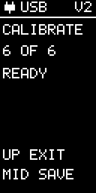

Calibration: save or exit
Exit without saving
Press the top button, UP EXIT, at any point before MID SAVE. EggBert returns HOME and discards the new readings. Your previous calibration remains active, even if all six faces have already been collected.
Calibrate deliberately
- Select CALIBRATE, place EggBert on one face and press middle (MID CAP).
- Set it down during the short delay, then hold still while it samples.
- Repeat for each of the six faces. A duplicate or tilted/moving face is rejected; reposition and try again.
- After 6 OF 6, READY appears. The new calibration is still unsaved.
- Press MID SAVE to install it. SAVED confirms success. If SAVE ERR appears, retry with middle or cancel with top.
Calibration affects the low-g accelerometer, including Level and low-g recordings. It does not calibrate high-g or the gyro. Saved recordings retain the calibration they had when collected.
